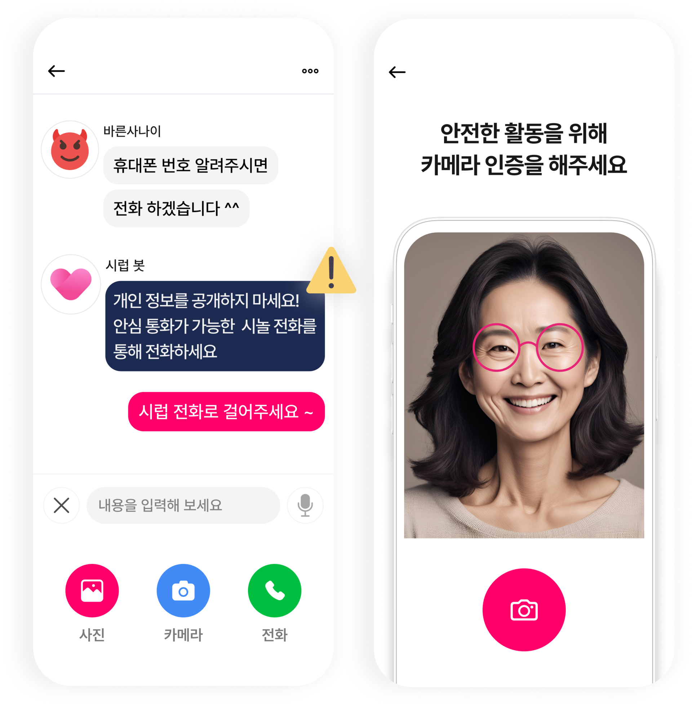

내 주변의 이성친구
위치 기반 추천으로 가까운 곳의 새로운 친구를 만나보세요.

내 정보와 관심사를 입력하고,
나에게 어울리는 이성친구를 추천받아 보세요.
거주지와 관심사, 원하는 만남의 조건을 바탕으로
새로운 이성친구를 알아가세요.
위치 기반 추천으로 가까운 곳의 새로운 친구를 만나보세요.
친구와의 거리, 희망 연령대를 선택해 나에게 맞는 만남을 찾아요.
같은 관심사를 가진 친구를 추천받고 자연스럽게 이야기를 시작해요.
아는 사람에게 노출되는 것이 걱정된다면 연락처 차단 기능을 이용해 보세요.
음성을 글자로 바꾸는 대화 기능과 안심 통화로
서로를 알아가는 시간을 가져보세요.
시럽은 이용자 보호를 위한 여러 기능을 운영해요.
안면 본인인증으로 타인의 사진을 도용하는 이용을 관리해요.
AI 모니터링과 키워드 필터링, 행동 분석으로 부적절한 이용을 살펴요.
불편한 이용자는 신고·차단하고, 개인정보를 지키며 대화하세요.
시놀은 취미와 활동을 함께할 친구를 찾는 모임앱이고, 시럽은 나와 맞는 이성친구를 추천받고 대화하는 데이팅앱이에요.
입력한 정보와 관심사를 바탕으로 추천해요. 위치와 친구와의 거리, 희망 연령대도 선택할 수 있어요.
안심 통화 기능을 이용하면 전화번호를 직접 공개하지 않고 매칭된 상대와 통화할 수 있어요.
시럽의 연락처 차단 기능을 이용해 보세요. 구체적인 설정과 적용 범위는 앱에서 확인할 수 있어요.